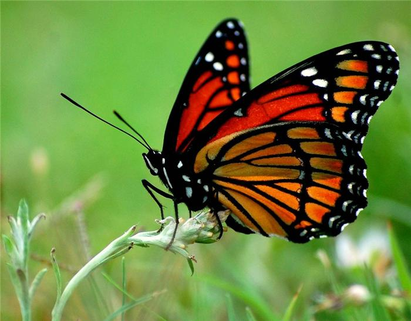
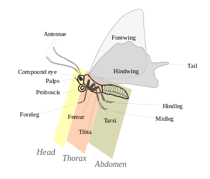
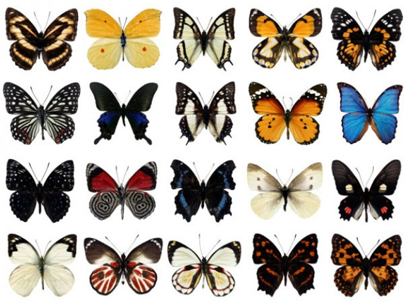

Общая численность
 Отряд чешуекрылых по видовому разнообразию несомненно выделяется среди таксонов подобного ранга. Чешуекрылые являются одной из крупнейших групп насекомых, включающей в себя по состоянию на август 2013 года — 158 570 видов, в том числе 147 ископаемых таксонов[10]. Предполагается, что до 100 000 видов остаются всё ещё не известными науке и, таким образом, общее число существующих на планете видов чешуекрылых может быть оценено приблизительно в 200 000[11][12] — 225 000 видов[13]. На территории России встречается 2166 родов и 8879 видов[14].
Чешуекрылые являются весьма разнообразными, а большинство их видов плохо изученными. Некоторые из описанных видов известны по находкам из одной-единственной местности либо даже по единственному экземпляру. Истинная оценка общего количества существующих видов никогда не будет известна, потому что многие виды вымерли ещё до их обнаружения. Систематика бабочек, представленная в различных работах, отражает различные взгляды их авторов и является, вне всякого сомнения, дискуссионной. Имеются споры, посвященные систематическому положению или необходимости сохранения статуса некоторых подвидов или видов. Исследования ДНК свидетельствуют, что некоторые из известных в настоящее время видов должны быть разделены. Хорошо известным примером является случай, когда на первый взгляд идентичные Colias alfacariensis и Colias hyale, ранее считавшиеся одним видом, были разделены на два, после того как были обнаружены существенные различия в строении их гусениц и куколок.
МОРФОЛОГИЯ
 Как у всех насекомых, тело бабочек делится на три главных отдела: голову, грудь и брюшко. Снаружи оно защищено твёрдым хитиновым покровом, образующим наружный скелет.Голова малоподвижная, свободная, округлой формы, с уплощённой затылочной поверхностью. Цервикальные склериты хорошо развиты, треугольные или Г-образные. Тенториум П- или (у ряда примитивных семейств, например, Agathiphagidae) Y-образной формы, у примитивных семейств (например, Micropterigidae, Eriocraniidae) также с хорошо выраженными дорсальными отростками.
Ротовые аппараты чешуекрылых разнообразны. У ряда примитивных семейств (например, Micropterigidae, Heterobathmiidae) — грызущий, с функционирующими мандибулами и развитыми жевательными лопастями максилл. У видов семейства Glossata ротовой аппарат сосущего типа — хоботок — образован сильно видоизменёнными нижними челюстями, образующими трубочку, в покое спирально свёрнутую. Хоботок состоит из двух полутрубчатых частей, которые соприкасаются краями и скрепляются заходящими друг на друга щетинками. Хоботок служит для питания жидкой пищей. Внутри него расположены мелкие чувствительные волоски, выполняющие рецепторную функцию.
Пигменты и окраска

Внешний вид и окраска крыльев бабочек имеют важную роль в повышении их выживаемости. Это и защитный камуфляж, внутривидовое половое распознание при спаривании, и апосематическая демонстрация. Окраска крыльев чешуекрылых может быть пигментной (зависит от содержащихся пигментов), оптической (зависит от преломления света) и комбинационной (сочетающая два предыдущих типа окраски). Яркая окраска крыльев некоторых бабочек (например, таких крупных и эффектно окрашенных бабочек как Ornithoptera) контролируется двумя основными механизмами: диффузным отражением падающего света от мультислоёв и спектральной фильтрацией внутреннего пигмента[31].